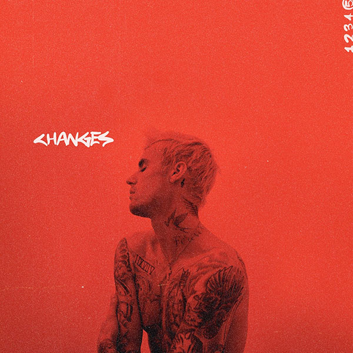
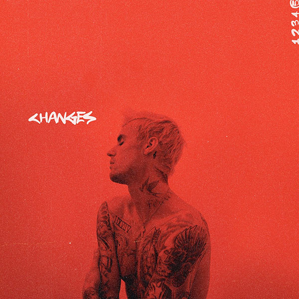

目录
贾斯汀·比伯
全名：贾斯汀·德鲁·比伯（英语：Justin Drew
Bieber）出生于1994年3月1日，是一名加拿大歌手及词曲作家。
重要事件
- 2008年，贾斯汀·比伯在视频网站YouTube上被其经纪人斯科特发现，随后被亚瑟小子培养进入歌坛。
- 2009年，发行第一张个人专辑《My Worlds》，并凭借专辑获得全美音乐奖年度艺人奖。
- 2010年，发行了他的首张录音室专辑《My World 2.0》。该专辑包含热门单曲“Baby”，在美国Billboard 200榜单上排名第一，这使比伯成为47年来排行榜中最年轻的男歌手。
- 2010年，他的处女作专辑和巡回演唱会之后，他发行了传记片电影《贾斯汀·比伯：永不言败》，这是票房上的成功。
- 2011年，发行录音室专辑《Under the Mistletoe》，2012年，发行录音室专辑《Believe》。发行后的几年里，比伯确立了自己的少年偶像身份。
- 2014年，首次被捕之前，就面临着一些争议，包括国际法律的磨合。在围绕Bieber引发争议之后，他的声音变得更加成熟，因为他过渡到EDM（电子舞曲）并脱离了青少年流行音乐。
- 2015年，他的第四张录音室专辑《Purpose》成为他在商业上最成功的专辑，并产生了三首Billboard Hot 100排名第一的单曲。
- 2018年，小贾将自己的Middle Name“Drew”注册为商标，并与多位好友及长期伙伴一起合作创立了品牌——Drewhouse。
- 2020年2月14日，第五张录音室专辑《Changes》正式发布。
成就和荣誉
- 2009年，发行第一张个人专辑《My Worlds》，并凭借专辑获得全美音乐奖年度艺人奖。
- 2010年3月，第二张个人专辑《My World2.0》发行一周便登上了公告牌专辑冠军。11月，凭借单曲《Baby》获得第27届MTV音乐奖最佳新人。
- 2011年8月，凭借歌曲《USmile》获得第28届MTV音乐录影带大奖最佳男歌手录影带奖。11月，获得欧洲MTV音乐奖最佳流行歌手奖和最佳男歌手奖。
- 2012年7月，凭借单曲《Boyfriend》获得美国青少年选择奖最佳男歌手。
- 2013年，发行现场专辑《Believe Acoustic》，并凭借该专辑获得了第40届全美音乐奖最佳艺人奖。
- 2015年8月，发行个人单曲《What Do You Mean?》并获得公告牌百强单曲榜首周冠军。11月，发行个人专辑《Purpose》，该专辑被提名第57届格莱美奖的年度专辑奖项。
-
2016年2月，凭借歌曲《Where Are U
Now》夺得第58届格莱美最佳舞曲录制奖。7月，演唱的歌曲《Sorry》提名美国MTV音乐录影带大奖年度最佳录影带。12月，单曲《LoveYourself》获得第59届格莱美奖年度歌曲提名。
- 2016年，比伯还是首位在Vevo上拥有100亿点阅人次的艺人。
- 在整个职业生涯中，比伯（Bieber）截至2019年已售出约1.5亿张唱片，是全球最畅销的音乐艺术家之一。
- 他获得了无数奖项，包括格莱美奖，15个美国音乐奖，20个广告牌音乐奖，两个英国音乐奖，一个拉丁格莱美奖，创纪录的21个MTV欧洲音乐奖和三个MTV视频音乐奖。
- 年少成名的Justin
Bieber是世界级顶尖流量的代表，从出道开始就拥有了一大批忠实的粉丝。他的IG粉丝高达1亿450万人数，每一张Po文的点赞几乎都有120w，之前和海狸公布结婚的帖子，更是创下1237万点赞，67万条评论的壮举。
主要作品
EP（mini专辑）
录音室专辑
| 序号 |
专辑名 |
年份 |
| 1 |
My World 2.0 |
（2010） |
| 2 |
Under the Mistletoe |
（2011） |
| 3 |
Believe |
（2012） |
| 4 |
Purpose |
（2015） |
| 5 |
Changes |
（2020） |
纪录片
| 片名 |
年份 |
| 贾斯汀·比伯：永不言败
| （2011） |
| 贾斯汀·比伯的《相信》
| （2013） |
| 贾斯汀·比伯：四季
| （2020） |
EP/专辑封面

 
